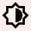

ÍNDICE 
Ordinário da Missa Português Latim Ritos Iniciais Liturgia da Palavra Or. Fiéis Liturgia Eucarística Oração Eucarística Prefácios Português Latim Oração Eucarística Português Latim Ritos da Comunhão Ritos de Conclusão
◄ Menos 1 dia Hoje Mais 1 dia ►
Tempos Litúrgicos ▼ Missa da semana
Leituras da Feria
Semana do ano:
Próprio dos Santos ▼ Missa do dia
Outras Missas ▼ Ir para a Missa marcada
Desmarcar Escolher e marcar Missa
● Acção de graças para depois da Missa ● Latim ● ● Inicio ● Calendário litúrgico ●